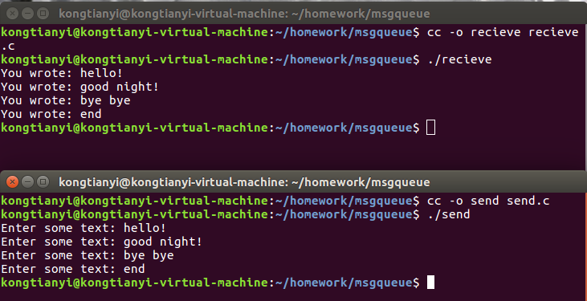

背景
操作系统课程习作。
环境
Ubuntu16.04 LTS
gcc version 5.4.0
关于进程通信
函数介绍
msgget
头文件
- #include <sys/types.h>
- #include <sys/ipc.h>
- #include <sys/msg.h>
函数原型
int msgget ( key_t key , int msgflg );
函数描述
建立消息队列
参数：
msgget()函数的第一个参数是消息队列对象的关键字(key)，函数将它与已有的消息队列对象的关键字进行比较来判断消息队列对象是否已经创建。而函数进行的具体操作是由第二个参数，msgflg 控制的。它可以取下面的几个值：
- IPC_CREAT ：如果消息队列对象不存在，则创建之，否则则进行打开操作;
- IPC_EXCL：和IPC_CREAT 一起使用（用”|”连接），如果消息对象不存在则创建之，否则产生一个错误并返回。
返回值：
成功时返回队列ID,失败返回-1，错误原因存于error中
- EEXIST (Queue exists, cannot create)
- EIDRM (Queue is marked for deletion)
- ENOENT (Queue does not exist)
- ENOMEM (Not enough memory to create queue)
- ENOSPC (Maximum queue limit exceeded)
msgsnd
头文件
- #include <sys/types.h>
- #include <sys/ipc.h>
- #include <sys/msg.h>
函数原型
int msgsnd ( int msgid , struct msgbuf*msgp , int msgsz, int msgflg )
函数描述
将消息送入消息队列
参数说明：
传给msgsnd()函数的第一个参数msqid 是消息队列对象的标识符（由msgget()函数得到）。
第二个参数msgp 指向要发送的消息所在的内存。
第三个参数msgsz 是要发送信息的长度（字节数），可以用以下的公式计算：
msgsz = sizeof(struct mymsgbuf) - sizeof(long);
第四个参数是控制函数行为的标志，可以取以下的值：
- 0，忽略标志位；
- IPC_NOWAIT，如果消息队列已满，消息将不被写入队列，控制权返回调用函数的线程。如果不指定这个参数，线程将被阻塞直到消息被可以被写入。
smgbuf结构体定义如下：1
2
3
4
5struct smgbuf
{
long mtype;
char mtext [x] ; //长度由msgsz决定
}
msgflg 可设置为 IPC_NOWAIT 。如果消息队列已满或其他情况无法送入消息，则立即 返回 EAGIN
返回：
- 0 on success
- -1 on error: errno = EAGAIN (queue is full, and IPC_NOWAIT was asserted)
- EACCES (permission denied, no write permission)
- EFAULT (msgp address isn’t accessable – invalid)
- EIDRM (The message queue has been removed)
- EINTR (Received a signal while waiting to write)
- EINVAL (Invalid message queue identifier, nonpositive
- message type, or invalid message size)
- ENOMEM (Not enough memory to copy message buffer)
msgrcv
头文件
- #include <sys/types.h>
- #include <sys/ipc.h>
- #include <sys/msg.h>
函数定义
int msgrcv( int msgid , struct msgbuf* msgp , int msgsz , long msgtyp, int msgflg)
函数描述
从消息队列中读取消息
参数：
函数的前三个参数和msgsnd()函数中对应的参数的含义是相同的。
第四个参数mtype指定了函数从队列中所取的消息的类型。函数将从队列中搜索类型与之匹配的消息并将之返回。不过这里有一个例外。如果mtype 的值是零的话，函数将不做类型检查而自动返回队列中的最旧的消息。第五个参数依然是是控制函数行为的标志，取值可以是：
- 0,表示忽略；
- IPC_NOWAIT，如果消息队列为空，则返回一个ENOMSG，并将控制权交回调用函数的进程。如果不指定这个参数，那么进程将被阻塞直到函数可以从队列中得到符合条件 的消息为止。如果一个client 正在等待消息的时候队列被删除，EIDRM 就会被返回。如果进程在阻塞等待过程中收到了系统的中断信号，EINTR 就会被返回。
- MSG_NOERROR，如果函数取得的消息长度大于msgsz，将只返回msgsz 长度的信息，剩下的部分被丢弃了。如果不指定这个参数，E2BIG 将被返回，而消息则留在队列中不被取出。当消息从队列内取出后，相应的消息就从队列中删除了。
msgbuf：结构体，定义如下：1
2
3
4
5struct msgbuf
{
long mtype ; //信息种类
char mtest[x];//信息内容 ，长度由msgsz指定
}
msgtyp: 信息类型。 取值如下：
- msgtyp = 0 ，不分类型，直接返回消息队列中的第一项
- msgtyp > 0 ,返回第一项 msgtyp与 msgbuf结构体中的mtype相同的信息
- msgtyp <0 , 返回第一项 mtype小于等于msgtyp绝对值的信息
msgflg:取值如下：
- IPC_NOWAIT ,不阻塞
- IPC_NOERROR ，若信息长度超过参数msgsz，则截断信息而不报错。
返回值：
成功时返回所获取信息的长度，失败返回-1。
错误信息存于error
- -1 on error: errno = E2BIG (Message length is greater than
msgsz,no MSG_NOERROR) - EACCES (No read permission)
- EFAULT (Address pointed to by msgp is invalid)
- EIDRM (Queue was removed during retrieval)
- EINTR (Interrupted by arriving signal)
- EINVAL (msgqid invalid, or msgsz less than 0)
- ENOMSG (IPC_NOWAIT asserted, and no message exists in the queue to satisfy the request)
msgctl
头文件
- #include<msg.h>
函数定义
int msgctl ( int msgqid, int cmd, struct msqid_ds *buf )
函数描述
控制消息队列的行为
参数
函数的第一个参数msgqid 是消息队列对象的标识符。
第二个参数是函数要对消息队列进行的操作，它可以是：
- IPC_STAT
取出系统保存的消息队列的msqid_ds 数据，并将其存入参数buf 指向的msqid_ds 结构中。 - IPC_SET
设定消息队列的msqid_ds 数据中的msg_perm 成员。设定的值由buf 指向的msqid_ds结构给出。 - IPC_RMID
将队列从系统内核中删除。
返回值：
- 0 on success
- -1 on error: errno = EACCES (No read permission and cmd is IPC_STAT)
- EFAULT (Address pointed to by buf is invalid with
- IPC_SET and IPC_STAT commands)
- EIDRM (Queue was removed during retrieval)
- EINVAL (msgqid invalid, or msgsz less than 0)
- EPERM (IPC_SET or IPC_RMID command was
- issued, but calling process does not have
- write (alter) access to the queue)
实现代码
发送端send.c
1 | #include <stdlib.h> |
接收端recieve.c
1 | #include <stdlib.h> |
运行结果

参考资料
http://lobert.iteye.com/blog/1743256
http://blog.csdn.net/piaojun_pj/article/details/5943736